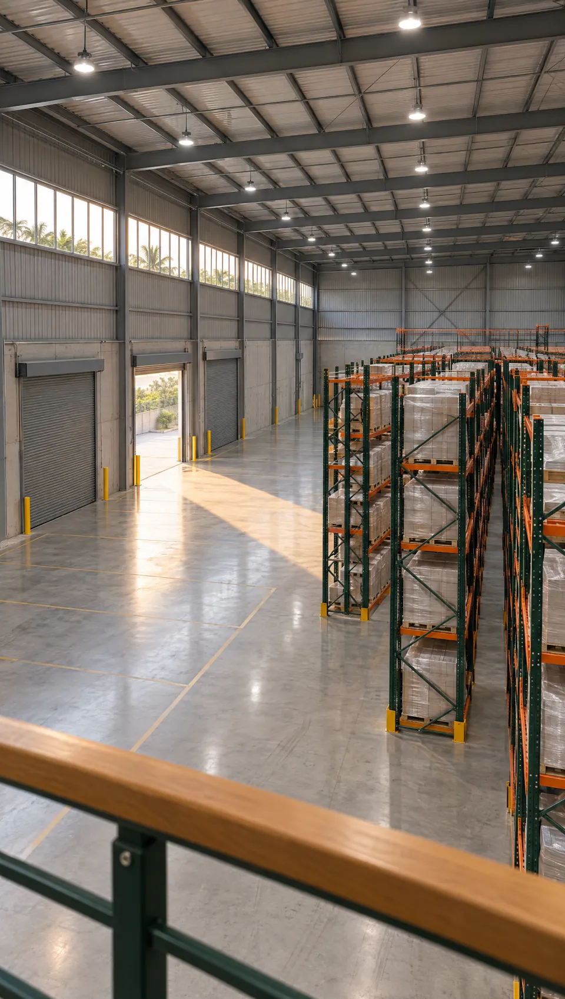
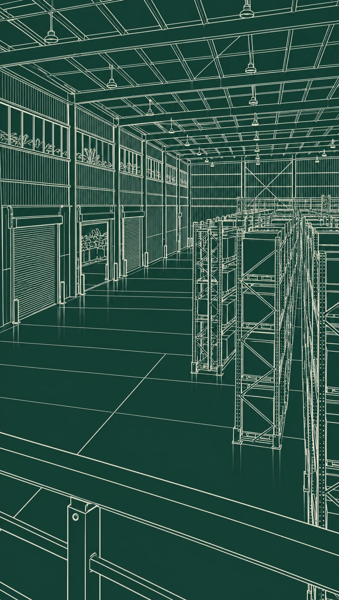
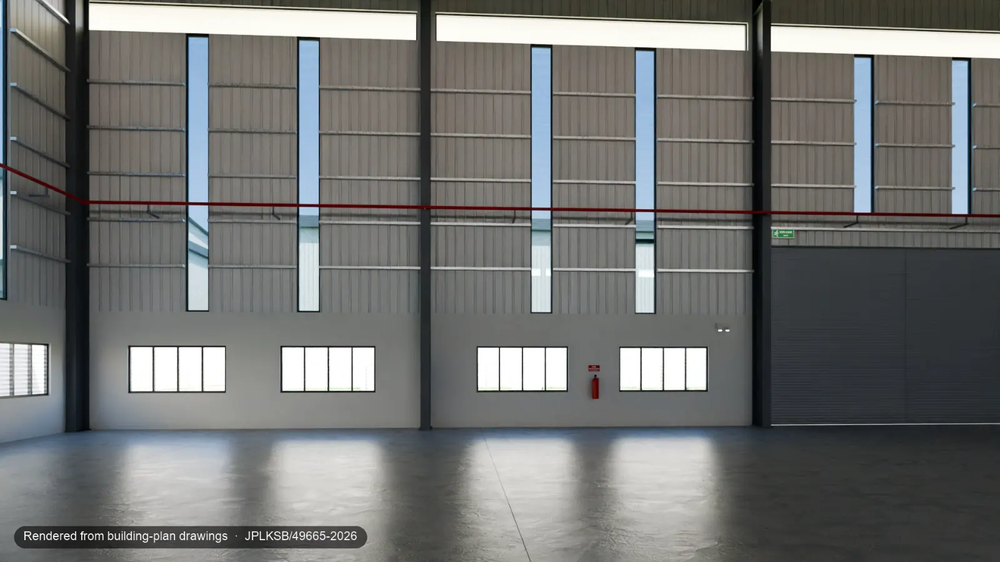
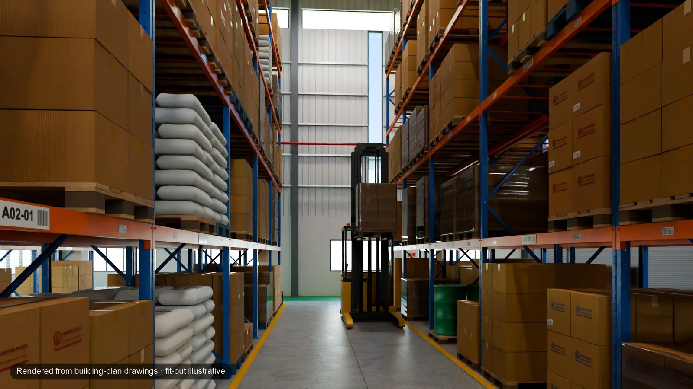

Show the whole facility
Bring the hall, offices, entrances and surrounding site together so people can understand how the spaces relate.
IDYRA / INDUSTRIAL
Turn factory, warehouse or facility plans into a digital 3D presentation. Show the building, its spaces and a possible fit-out in one clear view.



Bring the hall, offices, entrances and surrounding site together so people can understand how the spaces relate.
Make production, storage and supporting areas easier to discuss before detailed operational planning.
Present the building to your team, customers or prospective occupiers with a visual reference they can explore.
CONCEPTS FOR THIS KIND OF SPACE
Enlarge any concept, then tell us about your own space.
 Cutaway
CutawayIndustrial
A light-industrial facility seen with its roof lifted: production hall, racked warehouse, three loading bays and a two-storey office block on one landscaped plot.
Useful for: Presenting a whole site to prospects, tenants or a project team
 Whole building
Whole buildingIndustrial
A long distribution warehouse at golden hour: dock doors with shelters, a truck yard, a glazed office wing and solar panels on the roof.
Useful for: Explaining a large facility and its yard before a visit
 Interior view
Interior viewIndustrial
A precision workshop with a row of CNC machines, inspection benches, tool cabinets and a mezzanine office overlooking the floor.
Useful for: Presenting a workshop to customers and investors
 Interior view
Interior viewIndustrial
A dispatch hall: dock levellers, staged pallets in marked lanes, racking along one side and a covered apron outside.
Useful for: Discussing loading areas and staging with a logistics team
ConceptAI studies of fictional spaces. Your model is built from your plans and agreed scope.
FROM DRAWING TO DIGITAL SPACE
Share the type of building, approximate size and what you want to show. The first 20-minute review is free.
We agree the scope and price, then request authorised plans after a signed order. Review your private preview and the agreed revisions.
Receive the agreed model and presentation files with handover instructions. Hosting and ongoing updates are scoped separately.
Choose the model, images and presentation files you need. Your written quotation confirms what is included.
An explorable digital version of the building, with the views and illustrative layouts agreed for your project.
Selected images to explain the space. Add a film when your brief calls for a moving presentation.
Browser-ready model files, agreed supporting information and presentation media, with a clear handover.
Existing industrial Plan Twin and Showroom packages provide budget guidance. We confirm the building, deliverables, timeline and price in a written quotation.
Visualisation and presentation only. Structural design, measured surveys, renovation works and live monitoring are not included.
Ruang Industri 01 is a fictional factory concept. Orbit, zoom and pan across campus, hall, office, loading and plan views. Compare an empty shell, logistics and light assembly, then switch palette, daylight, roof and front walls.
Change the view. Compare choices. Keep your configuration.
Open in a separate tab ↗Fictional 3D scene. Loads when opened.
Demo · Interactive 3D
Original fictional concept, not client work and not the drawing-built demonstration below. It does not measure the site or simulate operations, safety, capacity or approvals.
INDUSTRIAL, IN MOTION
Explore six imagined industrial settings and four concepts for a connected future. Start with a clear digital presentation of your own building.
10 films

The whole facility
The questionHow do you explain the whole building?
What the film showsAn imagined industrial building becomes a cutaway, bringing the hall, offices and supporting spaces into one view.
A visual metaphor for the idea. Your model is built separately from authorised plans and an agreed brief.

Warehouse & logistics
The questionHow do loading, storage and dispatch relate?
What the film showsA fictional dispatch setting brings loading areas, storage and supporting spaces into context.
An illustrative building presentation, not a validated vehicle route, capacity assessment or operating simulation.

Food production
The questionHow can people picture your production space?
What the film showsAn imagined food-production facility shows work areas and the building around them in a coherent visual setting.
A sector concept for visual discussion. It does not demonstrate hygiene certification or process design.

Electrical assembly
The questionHow can customers understand the assembly setting?
What the film showsA fictional electrical-assembly setting presents work areas and equipment within the facility.
Equipment and layout are illustrative. Electrical design, testing and compliance are outside this presentation.

Fabrication & SME manufacturing
The questionHow do machines and supporting areas fit together?
What the film showsAn imagined fabrication workshop places equipment, work areas and the surrounding building in one visual reference.
A layout illustration for discussion, not a machinery recommendation or a clearance and safety assessment.

Specialised manufacturing
The questionHow do you present a factory people rarely see?
What the film showsA fictional glove-production facility shows a specialised industrial setting as part of a complete building presentation.
An original sector concept, not a customer factory, certified production line or performance claim.

Connected possibility / maintenance
The questionWhat if equipment information had a place in the model?
What the film showsAn imagined compressor is highlighted beside a conceptual digital view, suggesting how an equipment record could have a place in a model.
A connected capability concept. Live equipment links, maintenance alerts and predictive services are not currently offered.

Connected possibility / cold chain
The questionWhat if storage conditions could be seen in context?
What the film showsA fictional cold store provides the setting for a future idea: associating storage zones with condition records. The film does not show a working sensor connection.
Illustrative setting only. Live sensors, temperature assurance and cold-chain monitoring are not currently offered.

Connected possibility / energy
The questionWhat if building information could be explored by zone?
What the film showsA solar-roofed factory and a conceptual cutaway suggest where building and utility information could be viewed together.
A connected capability concept, not live metering, an energy audit or evidence of savings. These services are not currently offered.

Connected possibility / team briefing
The questionWhat if a team could discuss the facility in one shared view?
What the film showsA fictional model review puts a factory cutaway on a shared screen: a visual idea for clearer briefings and future connected information.
A future briefing concept, not a live collaboration product or operational dashboard. These services are not currently offered.
01 / Experience the digital twin
One building. From its original plan to a possible fit-out. Drag, explore and find your perspective.
Explore an existing industrial example.
Explore our drawing-built demo as an empty building or with two illustrative fit-outs.
Demonstration project, not client work. Fit-outs are illustrative; the model does not validate operational capacity, safety or permitted use.


As per plan Logistics fit-out
Loads here · about 1.5 MB
Talk through the model on a free 20-minute demo call.
Discuss the model in a scope reviewInvited previewChoose a state or tool to open the model.
Interim 3D model. It opens outside, as per plan, with illustrative people switched off. A desktop is recommended for detailed viewing; initial loading can take longer on a phone. Its lighting differs from the rendered stills.
Native camera moves through the drawing-built model. Every shot is labelled; fit-out is illustrative. No AI-animated footage.
Demonstration project, not client work, not offered for sale or rent through Idyra. Building plans submitted, not yet approved. 28,158 sq ft gross floor area. Model, not as-built or a survey. Uses depend on the land title and planning approval. Explore the case study ↗